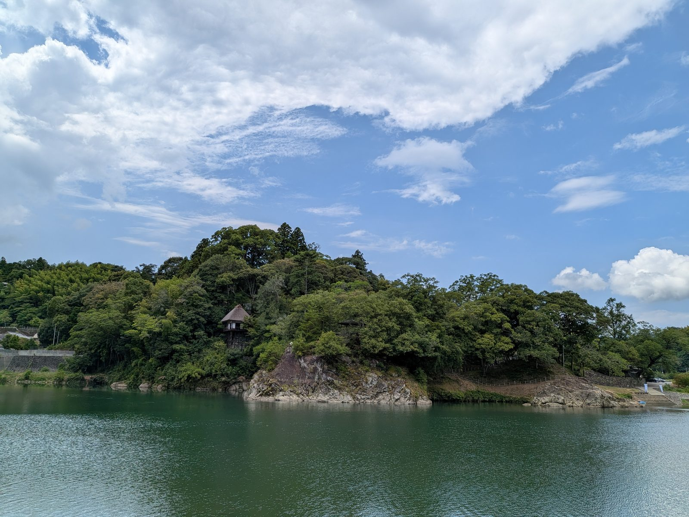

大洲の視点 ・ 出典: 群馬県立自然史博物館研究報告第19号（2015） ・ 約5分で読める

要点
オオサンショウウオは国の特別天然記念物だ。世界最大の両生類で、生息地といえば中国地方、というイメージが強い。
その化石が、大洲市肱川町から出ている。
報告したのは群馬県立自然史博物館研究報告 第19号（2015年）に載った論文で、筆頭著者は長谷川善和氏。
旧肱川村のカラ岩谷という場所から出た化石を、あらためて調べ直した内容だ。
場所は肱川町敷水（しきみず）。ここにはレンズ状の石灰岩の塊があり、昭和33年まで岩本鉱業が採石していた。
石灰岩の体には割れ目（裂罅＝れっか）ができる。そこに土砂や動物の骨が長い時間をかけて詰まっていく。
この堆積物が「敷水層」と名づけられていて、化石はここから出た。
調査が始まった経緯も、論文の冒頭に書かれている。石灰岩の中からサルなどの動物化石が出るという情報が愛媛新聞社から愛媛大学の永井浩三教授へ伝わり、そこから横浜国立大学の鹿間時夫教授に渡った。
両大学の合同調査に、愛媛新聞社と肱川村が後援としてついた。当初は旧石器時代人の発見が期待されていたそうだが、そちらの成果はなかった。
狙いは外れたのに、別のものが大量に出てきた発掘だった、ということになる。
オオサンショウウオの化石そのものは、実は1962年の報告（Shikama and Hasegawa）ですでに知られていた。
今回の論文が新しいのは、全標本を整理し直したときに、トラバーチン（石灰質の沈殿物）に包まれていた標本を新たに２点掘り出した点だ。
そのうちOCM-13は、これまで報告されたものを含めて最も保存が良い脊椎骨だという。
サイズの推定はこう書かれている。シーボルトらの『Fauna Japonica』に載っているオオサンショウウオの骨格図は全長56ｃｍ。
今回の標本はそれと比べて10％以上大きいので、体長70ｃｍを超えるものと推定される、と。
下顎の骨も同じくらいの大きさで、小さい脊椎骨は尾のものと考えられることから、最小個体数は２個体と見積もられている。少なくとも２匹分は、確実にあったということだ。
ここが一番知りたかったところだった。
論文はオオサンショウウオの項の最後で、「現在、中国地方を中心に分布するオオサンショウウオが後期更新世には四国にも自然分布していたと考えられる」と書いている。後期更新世は、およそ13万年前から１万年前にあたる。
そして論文全体の結語には、もっと踏み込んだ一文がある。「後期更新世には四国にナウマンゾウ―オオツノジカ動物群の一部が存在し、本州と陸続きであった」。
つまり答えは、「氷期に海面が下がって、四国と本州が地続きだったから」ということになる。
今の瀬戸内海は、当時は陸か、せいぜい細い川程度だった。中国地方の生き物と四国の生き物を分けるものが、そもそも無かった。
同じ地層からヤベオオツノジカやタイリクオオカミといった、瀬戸内海周辺で多産する動物が一緒に出ていることも、この見立てを支えている。オオカミの化石のほうは別記事にまとめた。
調べた結果を先に書くと、「いるとも、いないとも断定されていない」という状態だった。
愛媛県レッドデータブック2014を見ると、オオサンショウウオは県のカテゴリーで「情報不足（DD）」とされている。環境省のカテゴリーでは絶滅危惧II類（VU）だ。
県内の分布として挙げられているのは、四国中央市・西条市・松山市・久万高原町、そして大洲市。
大洲市の名前が、ちゃんと載っている。「山地渓流部ばかりではなく、人家近くの小川でも見つかっている」とも書かれている。
ところが選定理由がこうだ。「中型以上の成体が発見されているが、飼育個体が逃亡したり、移入された可能性も考えられる。また40年近く現認されず、確実な情報（繁殖、卵、幼生など）がない」。
見つかったことはある。ただ約40年、確認されていない。しかも見つかった個体が、もともと愛媛にいたものなのか、誰かが持ち込んだものなのかも分からない。
だから「自然に生息している」とは断定できない、というのが県の判断だった。
なお全国の状況を見ると、日本オオサンショウウオの会は「主に、岐阜県より西の近畿、中国地方に多く見られ、四国と九州の一部にもすんでいます」と説明している。
四国を分布域に含める書き方だ。県のレッドデータブックの慎重な言い回しとは、少し温度差がある。
まとめると、こうなる。今の大洲にいるかどうかは「分からない」。でも１万年以上前の大洲にいたことは、化石が確実に示している。
現在のほうが不確かで、過去のほうが確からしいという、少し不思議な状態だ。
同じ敷水層からは、寒冷地に多いタイリクオオカミが出ている。一方で、東南アジアなど南方に分布する水鳥リュウキュウガモも出た。
論文はこの取り合わせについて、「タイリクオオカミなど北方系のものとリュウキュウガモのように南方系のものが混在することは注目すべき点かもしれない」と書いている。
リュウキュウガモについては、分布の北限が四国まで伸びていたのか、それとも迷い込んだ迷鳥だったのかは不明としており、断定はしていない。
論文中の標本番号は「OCM」で始まる。これは大洲市教育委員会が管理する資料館に保管されている標本を指す記号だ。
経緯も少し複雑で、鹿間教授が関わった標本類はいったん長野県飯田市美術博物館に保管されていた。
その整理中に、既報のオオサンショウウオやオオツノジカ、タイリクオオカミなど未報告のものが見つかり、飯田市美術博物館の了解を得て大洲市に移管されたという。
愛媛から神奈川、長野を経て、また愛媛に戻ってきた化石ということになる。
そして化石が出た現場のほうは、これから水の底に沈む。山鳥坂ダムの湛水域に入るためで、論文にも「ダム完成後の出水時には水没する」と書かれている。
今回の再検討自体、国土交通省山鳥坂ダム工事事務所が進める記録保存の一環だった。
そのダムは2026年５月10日に本体工事の起工式を迎え、2032年度の完成を目指している。
１万年以上前の大洲にオオサンショウウオがいた、という事実が分かったのは、その場所が消えることが決まったからだった。
ダムの是非はここでは置くとして、記録保存という仕組みがなければ、この論文はたぶん書かれていない。